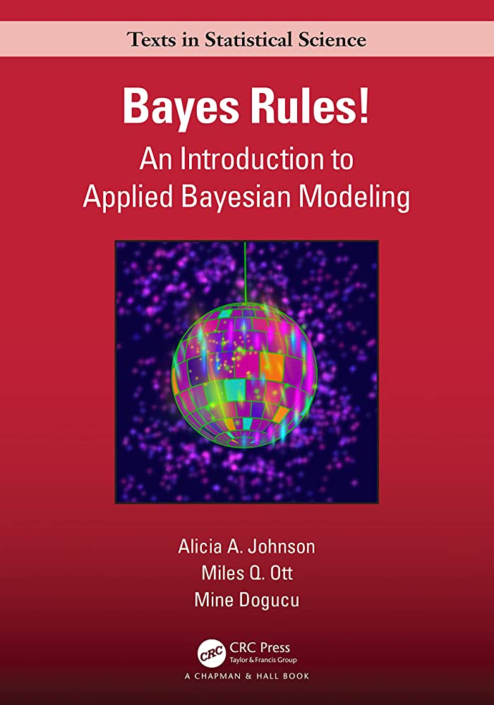

Gaussian Discriminant Analysis lead to curved decision boundaries
Linear Discriminant Analysis and linear decision boundaries
ScikitLearn approaches for Linear / Gaussian Discriminant Analysis
Explore Naive Bayes classification
Discuss Fisher’s linear discriminant analysis
library("bayesrules")library("dplyr")library("e1071")library("ggplot2")library("ggtext")library("gt")library("janitor")library("magrittr") #need for "." in pipe acts# library("MASS") #carefully use lda() later to not overwrite select()library("patchwork")library("tidyr")sessionInfo()
There exist multiple penguin species throughout Antarctica, including the Adelie, Chinstrap, and Gentoo. When encountering one of these penguins on an Antarctic trip, we might classify its species
\[Y = \begin{cases} A & \text{Adelie} \\ C & \text{Chinstrap} \\ G & \text{Gentoo} \end{cases}\]
three species
Example comes from chapter 14 of Bayes Rules!

Bayes Rules! textbook
\(X_{1}\) categorical variable: whether the penguin weighs more than the average 4200 grams
species n percent
Adelie 152 0.4418605
Chinstrap 68 0.1976744
Gentoo 124 0.3604651
Motivation
Here, we have three categories, whereas logistic regression is limited to classifying binary response variables. As an alternative, naive Bayes classification
can classify categorical response variables \(Y\) with two or more categories
Suppose an Antarctic researcher comes across a penguin that weighs less than 4200g with a 195mm-long flipper and 50mm-long bill. Our goal is to help this researcher identify the species of this penguin: Adelie, Chinstrap, or Gentoo
image code
penguins |>drop_na(above_average_weight) |>ggplot(aes(fill = above_average_weight, x = species)) +geom_bar(position ="fill") +labs(title ="<span style = 'color:#067476'>For which species is a<br>below-average weight most likely?</span>",subtitle ="(focus on the <span style = 'color:#c65ccc'>below-average</span> category)",caption ="R4DS Book Club") +scale_fill_manual(values =c("#c65ccc", "#fb7504")) +theme_minimal() +theme(plot.title =element_markdown(face ="bold", size =24),plot.subtitle =element_markdown(size =16))
Recall: Bayes Rule
\[f(y|x_{1}) = \frac{\text{prior}\cdot\text{likelihood}}{\text{normalizing constant}} = \frac{f(y) \cdot L(y|x_{1})}{f(x_{1})}\] where, by the Law of Total Probability,
The posterior probability that this penguin is an Adelie is more than double that of the other two species
One Numerical Predictor
Let’s ignore the penguin’s weight for now and classify its species using only the fact that it has a 50mm-long bill
image code
penguins|>ggplot(aes(x = bill_length_mm, fill = species)) +geom_density(alpha =0.7) +geom_vline(xintercept =50, linetype ="dashed", linewidth =3) +labs(title ="<span style = 'color:#c65ccc'>For which species is a<br>50mm-long bill the most common?</span>",subtitle ="one numerical predictor",caption ="R4DS Book Club") +scale_fill_manual(values =c(adelie_color, chinstrap_color, gentoo_color)) +theme_minimal() +theme(plot.title =element_markdown(face ="bold", size =24),plot.subtitle =element_markdown(size =16))
Our data points to our penguin being a Chinstrap
we must weigh this data against the fact that Chinstraps are the rarest of these three species
difficult to compute likelihood \(L(y = A | x_{2} = 50)\)
This is where one “naive” part of naive Bayes classification comes into play. The naive Bayes method typically assumes that any quantitative predictor, here \(X_{2}\), is continuous and conditionally normal:
# Calculate sample mean and sd for each Y grouppenguins |>group_by(species) |>summarize(mean =mean(bill_length_mm, na.rm =TRUE), sd =sd(bill_length_mm, na.rm =TRUE))
# A tibble: 3 × 3
species mean sd
<fct> <dbl> <dbl>
1 Adelie 38.8 2.66
2 Chinstrap 48.8 3.34
3 Gentoo 47.5 3.08
Though a 50mm-long bill is relatively less common among Gentoo than among Chinstrap, it follows that our naive Bayes classification, based on our prior information and penguin’s bill length alone, is that this penguin is a Gentoo – it has the highest posterior probability.
We’ve now made two naive Bayes classifications of our penguin’s species, one based solely on the fact that our penguin has below-average weight and the other based solely on its 50mm-long bill (in addition to our prior information). And these classifications disagree: we classified the penguin as Adelie in the former analysis and Gentoo in the latter. This discrepancy indicates that there’s room for improvement in our naive Bayes classification method.
Two Predictor Variables
image code
penguins |>ggplot(aes(x = flipper_length_mm, y = bill_length_mm, color = species)) +geom_point(size =3) +geom_segment(aes(x =195, y =30, xend =195, yend =50),color ="black", linetype =2, linewidth =2) +geom_segment(aes(x =170, y =50, xend =195, yend =50),color ="black", linetype =2, linewidth =2) +labs(title ="<span style = 'color:#c65ccc'>Two Predictor Variables</span>",subtitle ="50mm-long bill and 195mm-long flipper",caption ="R4DS Book Club") +scale_color_manual(values =c(adelie_color, chinstrap_color, gentoo_color)) +theme_minimal() +theme(plot.title =element_markdown(face ="bold", size =24),plot.subtitle =element_markdown(size =16))